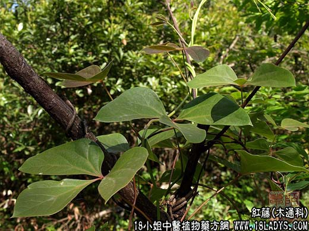

【中药概述】
红藤为木通科攀缘灌木植物大血藤的藤茎。苦、平。归胃、大肠经。
1．清热解毒，消肿：用于肠痈初起腹痛等，常与清热解毒、凉血消痈药同用，如（中医方药手册<红藤煎>）。
2．活血通络：用于风湿关节疼痛，单用即有效，亦可与威灵仙，五加皮，牛膝等配伍；跌打损伤、痛经，可与当归，香附等同用。
【药效鉴别】
本品能清热解毒，活血消痈，善入大肠治肠痈。又能活血通络，以散瘀通经止痛。
【临证应用】
治菌痢，属湿热内蕴型，腹痛腹泻，下痢赤白粘稠，里急后重，肛门灼热。用本品50g、忍冬藤25g，水煎分4～6次服。
【药理作用】
煎剂对金黄色葡萄球菌、乙型链球菌有较强的抑制作用。对大肠杆菌、白色葡萄球菌、邓脓杆菌亦有一定抑制作用。
【化学成分】
含鞣质等。
【用量用法】
9——20g，水煎服，或入丸、散剂。外用适量。